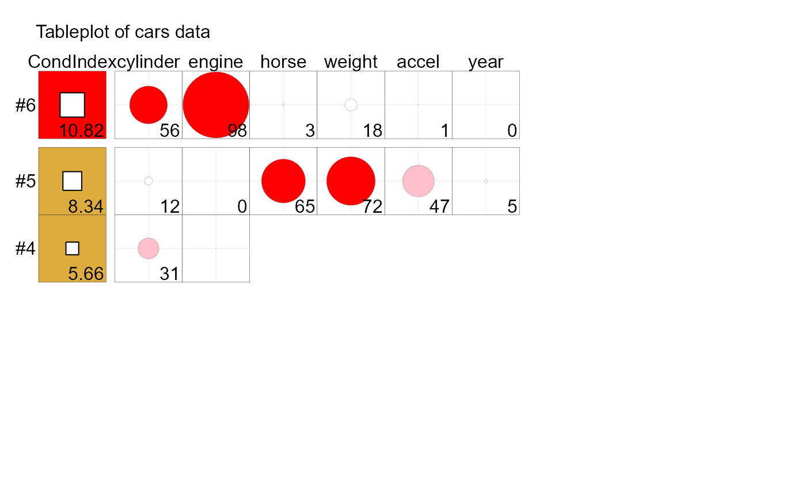
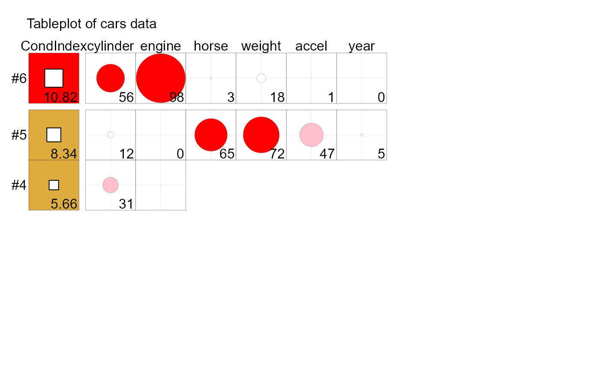

A tableplot (Kwan, 2008) is designed as a semi-graphic display in the form of a table with numeric values, but supplemented by symbols with size proportional to cell value(s), and with other visual attributes (shape, color fill, background fill, etc.) that can be used to encode other information essential to direct visual understanding. Three-way arrays, where the last dimension corresponds to levels of a factor for which the first two dimensions are to be compared are handled by superimposing symbols.
The specifications for each cell are given by the types argument, whose elements refer
to the attributes specified in patterns.
Usage
tableplot(values, ...)
# S3 method for default
tableplot(
values,
types,
patterns = list(list(0, "black", 1, "white", "white", 0, 0.5, "grey80", FALSE, 1)),
title = "Tableplot",
side.label = "row",
top.label = "col",
table.label = TRUE,
label.size = 1,
side.rot = 0,
gap = 2,
v.parts = 0,
h.parts = 0,
cor.matrix = FALSE,
var.names = "var",
...
)Arguments
- values
A matrix or 3-dimensional array of values to be displayed in a tableplot
- ...
Arguments passed down to
tableplot.default- types
Matrix of specification assignments, of the same size as the first two dimensions of
values. Entries refer to the sub-lists ofpatterns. Defaults to a matrix of all 1s,matrix(1, dim(values)[1], dim(values[2])), indicating that all cells use the same pattern specification.- patterns
List of lists; each list is one specification for the arguments to
cellgram.- title
Main title
- side.label
a character vector providing labels for the rows of the tableplot
- top.label
a character vector providing labels for the columns of the tableplot
- table.label
Whether to print row/column labels
- label.size
Character size for labels
- side.rot
Degree of rotation (positive for counter-clockwise)
- gap
Width of the gap in each partition, if partitions are requested by
v.partsand/orh.parts- v.parts
An integer vector giving the number of columns in two or more partitions of the table. If provided, sum must equal number of columns.
- h.parts
An integer vector giving the number of rows in two or more partitions of the table. If provided, sum must equal number of rows.
- cor.matrix
Logical.
TRUEfor a correlation matrix- var.names
a list of variable names
Note
The original version of tableplots was in the now-defunct tableplot package https://cran.r-project.org/package=tableplot. The current implementation is a modest re-design focused on its use for collinearity diagnostics, but usable in more general contexts.
References
Kwan, E. (2008). Improving Factor Analysis in Psychology: Innovations Based on the Null Hypothesis Significance Testing Controversy. Ph. D. thesis, York University.
Examples
data(cars)
cars.mod <- lm (mpg ~ cylinder + engine + horse + weight + accel + year,
data=cars)
car::vif(cars.mod)
#> cylinder engine horse weight accel year
#> 10.633049 19.641683 9.398043 10.731681 2.625581 1.244829
(cd <- colldiag(cars.mod, center=TRUE))
#> Condition
#> Index Variance Decomposition Proportions
#> cylinder engine horse weight accel year
#> 1 1.000 0.005 0.003 0.005 0.004 0.009 0.010
#> 2 2.252 0.004 0.002 0.000 0.007 0.022 0.787
#> 3 2.515 0.004 0.001 0.002 0.010 0.423 0.142
#> 4 5.660 0.309 0.014 0.306 0.087 0.063 0.005
#> 5 8.342 0.115 0.000 0.654 0.715 0.469 0.052
#> 6 10.818 0.563 0.981 0.032 0.176 0.013 0.004
tableplot(cd, title = "Tableplot of cars data", cond.max = 30 )
 
